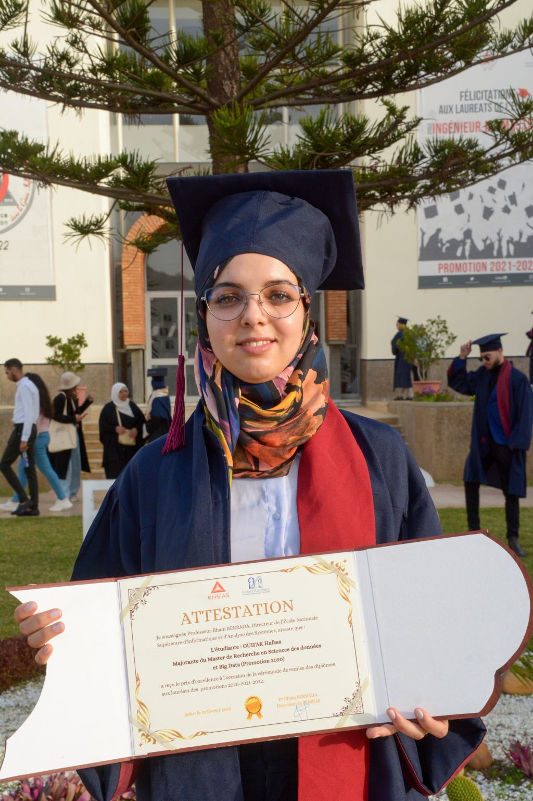
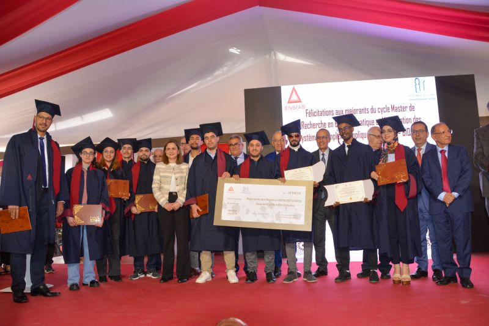

EXPLAINABLE AI · PHYSICAL AI · HUMAN CURIOSITY
Hafsaa
Ouifak.
Making intelligence
understandable.
AI researcher working on explainable AI and Physical AI — connecting understandable models with intelligent systems in the physical world.

Curious by nature.Researcher by choice. ↗

A journey made of people. ↗Connected to the world.
Connect.
Visiting Research ScholarUTRGV · Texas, USA
Ph.D. Candidate in AIUM6P · Morocco
A researcher.
A builder. A lifelong learner.
I’m interested in a simple question: how can we trust a model we don’t understand? My doctoral research at Mohammed VI Polytechnic University brings performance, interpretability, and physical consistency together through neuro-fuzzy systems.
At UTRGV’s Institute for Advanced Manufacturing, I take these ideas into battery management, digital twins, and autonomous water drones. Outside the lab, I teach, mentor, and bring people together around technology.
A RECENT RESEARCH DIRECTION / PHYSICAL AI
Intelligence in
the physical world.
I’ve recently expanded my work into Physical AI: systems that connect perception, reasoning, and action while interacting with their environment.
Why it matters: decisions in the physical world have real consequences. Feedback, physical constraints, and reliable behavior are essential for useful autonomous systems. I’m exploring these questions alongside my work on interpretable models, digital twins, and battery-aware autonomy.
Explore the applied researchSense
Observe the system and its environment.
Reason
Interpret states, uncertainty, and physical constraints.
Act
Support informed actions, then learn from feedback.
02 / RESEARCH IN MOTION
Big questions.
Real-world connections.
Explore the ideas I’m working on.
Open a project to go a little deeper.
03 / THE PLAYGROUND
A LITTLE INTERACTIVE EXPERIMENTIs it hot?
It’s a little fuzzy.
Human language rarely fits into a yes-or-no box. Fuzzy logic lets a temperature be partly “warm” and partly “hot” at the same time.
Move the slider. Watch the memberships change. That’s a small glimpse into the interpretable systems I study.
The post that inspired thisIllustrative membership functions, not probabilities. Categories can overlap and do not need to add up to 100%.
04 / THE RESEARCH LIBRARY
Ideas worth
looking into.
Follow a research thread, find a paper,
or take a closer look at a featured idea.
05 / CONNECTING THE DOTS
Curiosity has
taken me places.
From mathematics in Marrakech to trustworthy AI in Morocco and applied research in Texas.
06 / LIFE BETWEEN THE PAPERS
Science happens
with people.
LET’S CONNECT THE DOTS
A question? An idea?
A good conversation.
Research collaborations, speaking, mentoring, or simply a shared curiosity about AI — I’d love to hear from you.
hafsaaouifak@gmail.com